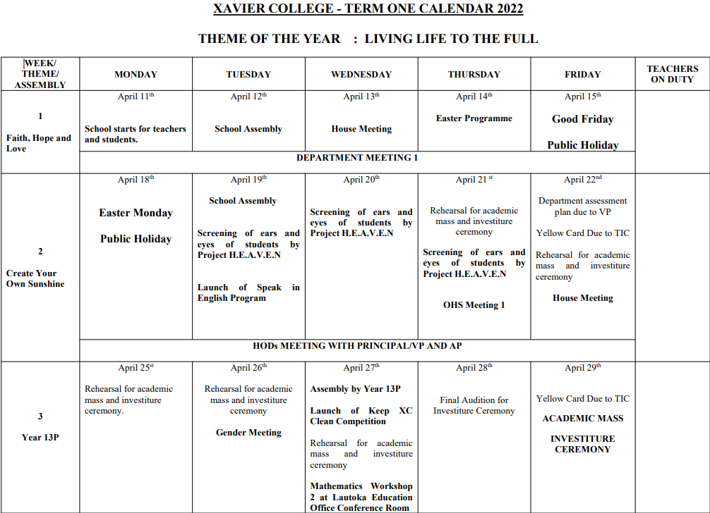
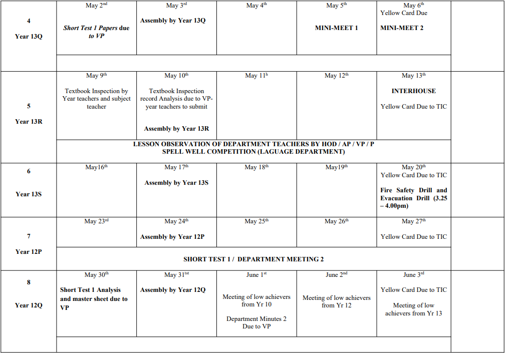
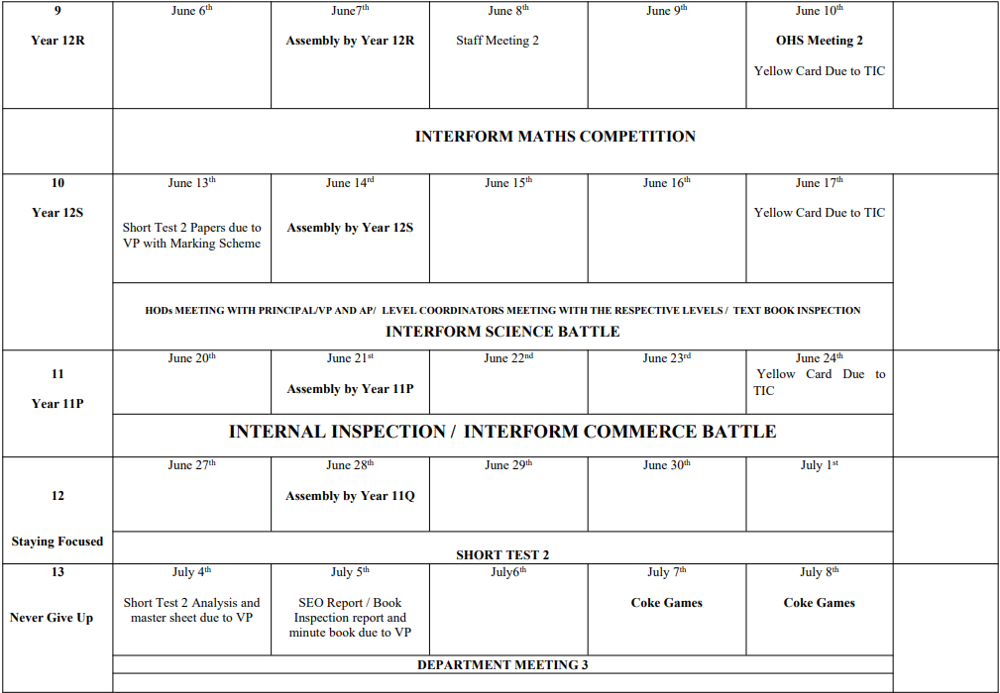
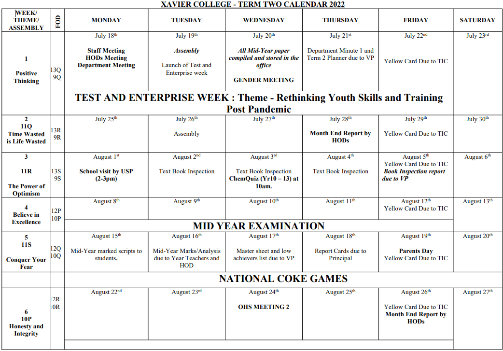

Nurturing holistic development through academic engagement, athletic competition, and disciplined co-curricular activities.
Academic Scope
What Are School Programmes?
School programs encompass all school-sponsored and approved activities, events, and functions — on or off school premises — where students are under the guidance and leadership of Xavier College educators and staff. These programs are structured alongside the scholastic curriculum to foster character, teamwork, and personal responsibility.
From national curriculum subjects to co-curricular disciplines, Xavier College provides diverse learning tracks ensuring each student develops both cognitive knowledge and practical life skills.
Programme Visuals
School Events & Programmes Showcase
Documented College Activities




Beyond the Classroom
Co-Curricular Activities & Sports
There are diverse activities a student at Xavier College can participate in. Our school actively competes in Soccer across Under 15, Under 17, and Under 19 divisions, as well as in Rugby across the same age grades. Netball is enthusiastically played by our female students, competing in district and national secondary school championships.
Athletics is a cornerstone of our school calendar, culminating in the annual Inter-House Athletics Competition where the four college houses vie for the prestigious championship shield. Furthermore, service clubs like the DEAR Club engage in literacy and community service projects, while our military cadet detachment instills lifelong discipline and leadership.
Discipline & Leadership
Cadets Training (RFMF)
Students are instilled with discipline and civic responsibility through formal cadet training conducted in partnership with the Republic of Fiji Military Forces (RFMF). This training builds resilience, teamwork, mutual respect, and pride, concluding in the annual Passout Parade inspected by military commanders.
Academic Expression
Annual Theme Presentations
Every academic year, year levels are assigned an overarching theme. Students prepare collaborative oral and multimedia presentations showcased to the entire student body and faculty in the college auditorium, developing public speaking and creative coordination.
Social Service
Interform & St. Vincent Society
Organized under the patronage of St. Vincent de Paul, students initiate charitable fundraising through sporting matches and social drives. Participation nurtures empathy, independence, and an understanding of the broader community.
Physical Wellbeing
College Gymnasium & Fitness
The college gym gives students a space to train, stay active, and build fitness habits that carry well beyond school. Regular exercise also helps with focus and endurance in the classroom.
Student Empowerment
Students' Day Celebrations
At the end of Term 1, students take charge and run the day themselves — performances, speeches, games, and celebrations that bring the whole school together. It's one of the highlights of the year.
Creative Competition
Department Events & Exhibitions
Each term, different departments run their own events — science quizzes, writing competitions, maths challenges, art shows. Students get to shine outside of regular exams and find out what they're really good at.